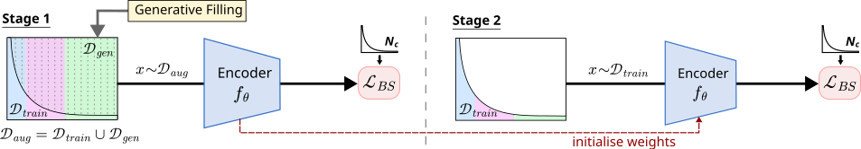

1University of Bristol · 2Adobe Research
ECCV 2026
TL;DR: We address long-tailed video action recognition by filling the imbalance with synthetic videos from text-to-video generation models, and show that a two-stage training strategy works best, improving over current best methods.
Naive, templated prompts (just the class label) lack diversity and are often semantically ambiguous.
To solve this, a multimodal LLM analyses real video exemplars to build an action profile and write diverse, class-faithful text prompts. A text-to-video model then uses these to create clips that fill the long tail.
Surprisingly, naively adding the synthetic clips to training does worse than using real data alone, an effect of the synthetic-to-real shift.
To fix this, we train in two stages. We first learn features from the balanced real + generated clips using loss margins based on real data frequencies. A brief rehearsal on just the real data then corrects the domain shift.

We introduce two long-tailed benchmarks built from popular datasets: K100-LT and UCF-LT.
Class-average accuracy (C/A) against standard and SOTA long-tail baselines, all using the same VideoMAE backbone. Gen2Balance achieves the best overall accuracy, with the largest gains on tail and few-shot classes.
| Method | Gen. | Few | Tail | Head | Avg C/A |
|---|
Gen. = uses our generated data. The grayed CE (full dataset) row trains on the full balanced data and is an upper-bound reference.
Click on any bar! Each bar represents a K100-LT class, showing our accuracy improvement over the baseline. Notice the gains grow toward the data-starved tail and few-shot classes.
Bars: green = improvement, red = regression. Shaded bands group head / tail / few-shot classes.
RareAct dataset features compositionally rare actions, formed by unlikely verb-noun pairs such as cut keyboard, drill phone and hammer phone, that almost never occur in real footage. We curate 22 of them and append them to K100-LT as few-shot classes with only 5 training real clips each to ask: can Gen2Balance extend to rare actions?
Class-average accuracy on the 22 RareAct classes.
Generation is unbounded, but you don't need to fully balance to see major gains. Drag the filling threshold B to explore the trade-off: the left shows accuracy vs. cost (H100 GPU hours), the right visualizes the distribution.
Partial balancing (B = 330) recovers +6.4% average and +13.5% few-shot accuracy, close to full balancing's +8.1% / +13.5%, at just 27% of the generation compute (2.5K vs 9.2K GPU-hours).
You can capture the bulk of the gains for a fraction of the cost, and this is a one-time offline cost that shrinks as generative models get faster.
We balance long-tailed video datasets with synthetic clips from a pre-trained text-to-video model.
An automatic LLM-driven pipeline (Gemini 2.5 Pro + WAN 2.1) for diverse, class-faithful prompts, and a public release of 140K videos across 223 classes.
Two-stage training (combined → real) with a class-balanced loss using real-data margins works best.
Up to +6.7% (K100-LT) and +5.5% (UCF-LT few-shot) over the strongest baselines, and +31.9% on rare RareAct actions.
@inproceedings{gatti2026gen2balance,
title = {Gen2Balance: Generative Balancing for Long-Tailed Video Action Recognition},
author = {Gatti, Prajwal and Jenni, Simon and Caba Heilbron, Fabian and Damen, Dima},
booktitle = {European Conference on Computer Vision (ECCV)},
year = {2026}
}